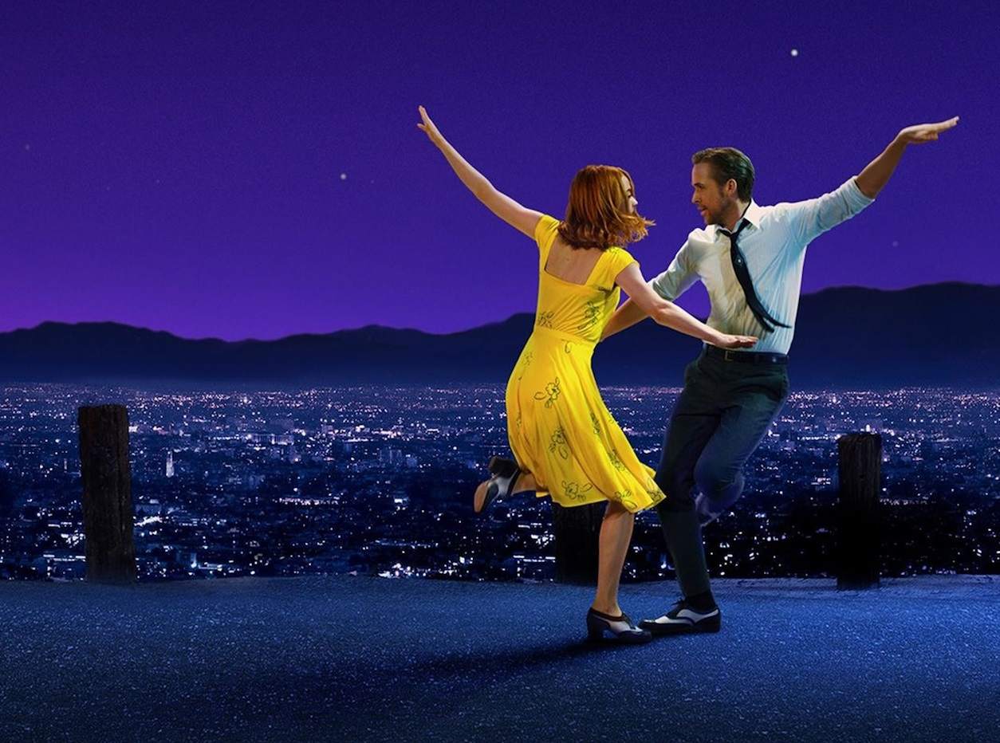
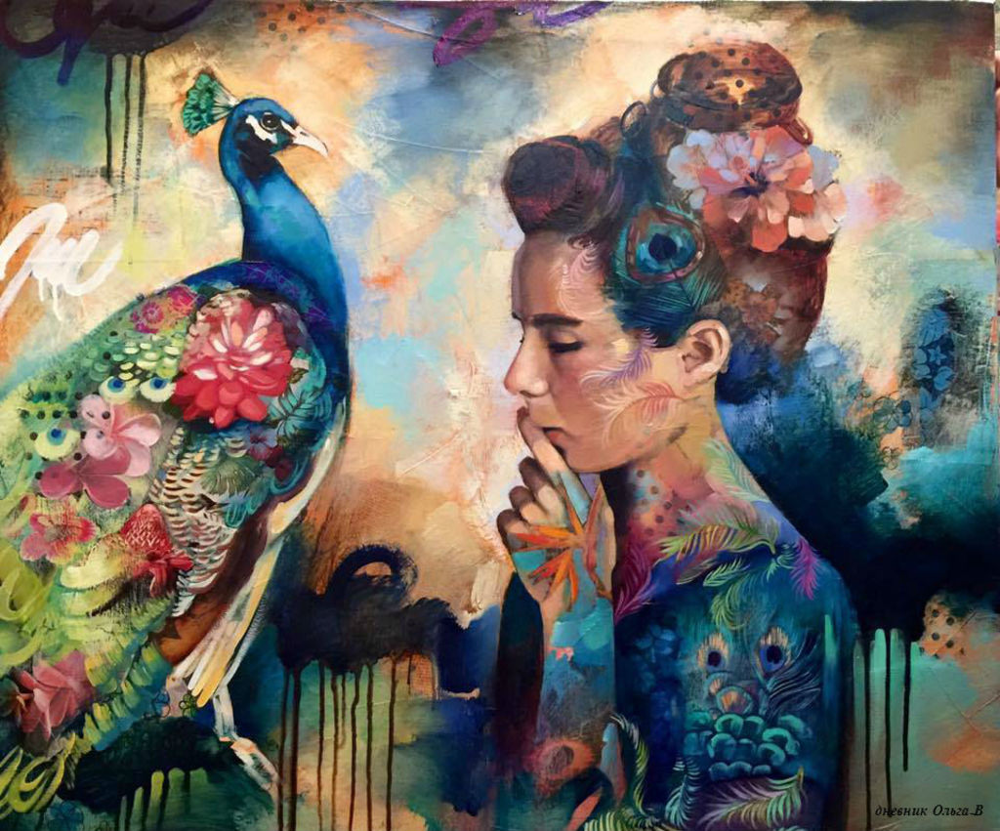
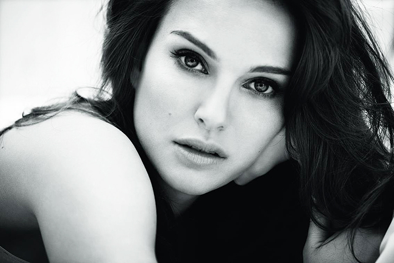

Read more...
Ла-Ла Ленд взял шесть "Оскаров"
В Лос-Анджелесе состоялась 89-я церемония вручения наград Американской академии киноискусств.
Пусть «Ла-Ла Ленд» и не взял рекордные 14 статуэток, но победа в шести номинациях тоже о многом говорит.В финале церемонии
случился забавный казус, который наверняка будут обсуждать активнее, чем победителей. На лицах Фей Данауэей и Уоррена Битти,
которые объявляли самый лучший фильм, читалось неподдельное изумление, когда они вскрыли конверт с названием победителя.
После непродолжительного замешательства лучшим фильмом назвали «Ла-Ла Ленд». Овации, аплодисменты, на сцену вышли продюсеры
ленты и многие члены съемочной группы, зазвучали традиционные благодарности в адрес родителей, детей и всех-всех-всех.

Read more...
Райский сад Импрессионизма
25 февраля 2017 года в ТЦ «Galleria Minsk» открылась лофт-выставка «Райский сад Импрессионизма»,
на которой былі представлены точные полноразмерные копии полотен выдающихся художников импрессионизма и постимпрессионизма.
Для того чтобы лучше прочувствовать настроение и особое восприятие мира художниками представленных картин, организаторы выставки
разместілі полотна в «райском саду» - среди музыки, живых цветов и тропических птиц.

Read more...
Кино
В минских кинотеатрах состоялась премьера фильма «Джеки» с Натали Портман в главной роли.
Это фильм-биография Жаклин Кеннеди — первой американской леди в начале 60-х. В этой ленте авторы воспроизвели один
из трагических моментов в американской истории — убийство президента Кеннеди в Далласе — и последовавшие за ним несколько
дней, показав эти события глазами самой Жаклин.